Art Practice
Projects, exhibitions, and works in participatory art, installation, painting, drawings, mixed media.
Selected Works
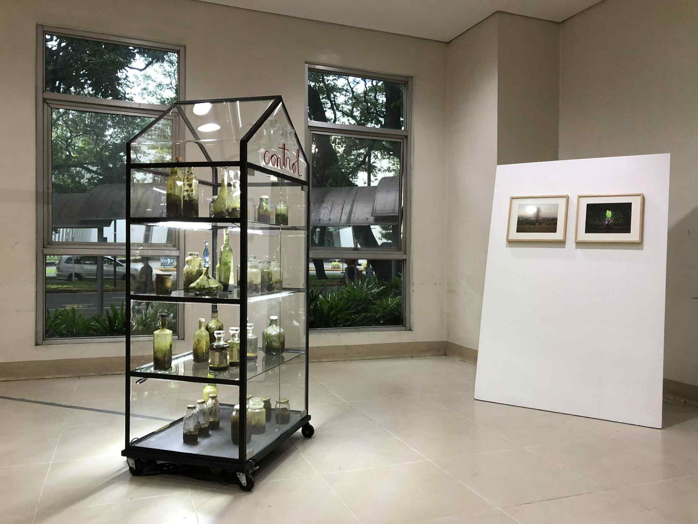
Green After
Green After is an ongoing art investigation into nature’s overgrowth, the memory of the place, and humans' attitude towards nature, characterized by care and control.
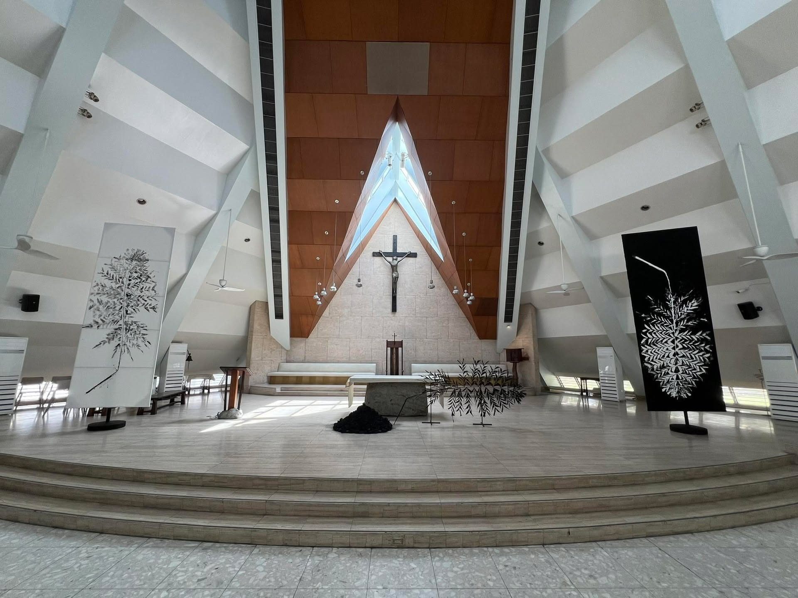
Kuwaresma
Large leaf-print paintings of palm leaves for the duration of Lent (40 days) installed at the Church of the Gesù, Ateneo de Manila University.
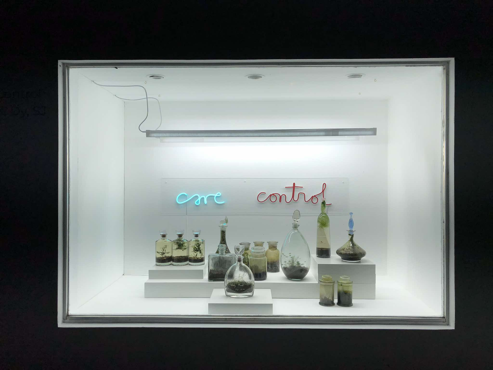
Care/Control
In this exhibition, Dy invites us to a phytophenomenology; particularly, one that aims to capture and investigate the aliveness of plants in these terrariums: how these living matter perceive the prevailing atmosphere, and subsequently, how they are able to nurture and nourish themselves with respect to available space, temperature, light, and water.- Lea Marie Diño
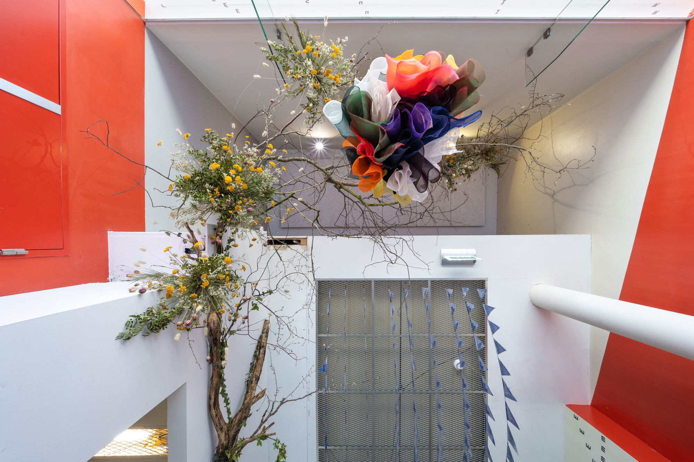
Re-Pose
Throughout the space, and in a walk led by Dy to sites of healing and death in Utrecht, the ikebana compositions came alive, adorning tables in the UPS gymnasium, exploding into a topological altarpiece with wood and dried flowers strung from the ceiling of the entrance hall, or laying at a gravesite. - Annie Goodner, “Vine and Hollow,” e-flux, online, 26 May 2023, Photo: Tom Janssen.

Wa-Pen: Green After
Thus, art through the leaf-print mural intervenes in the space (eatery) and examines the mutual interaction and interference that affects both the community and the proprietors of the eatery, the artist and his collaborations.
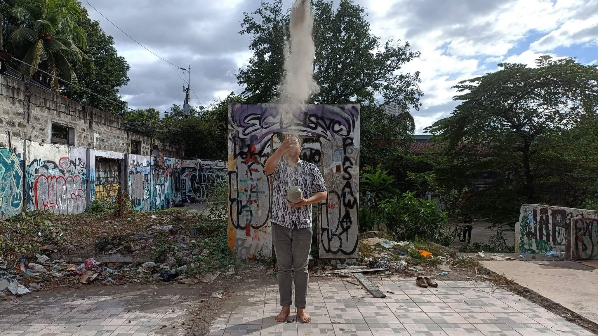
Abo Sa Abo
In solidarity with families who have lost their loved ones to war. Especially the war in Ukraine and the Duterte government’s brutal war on illegal drugs.
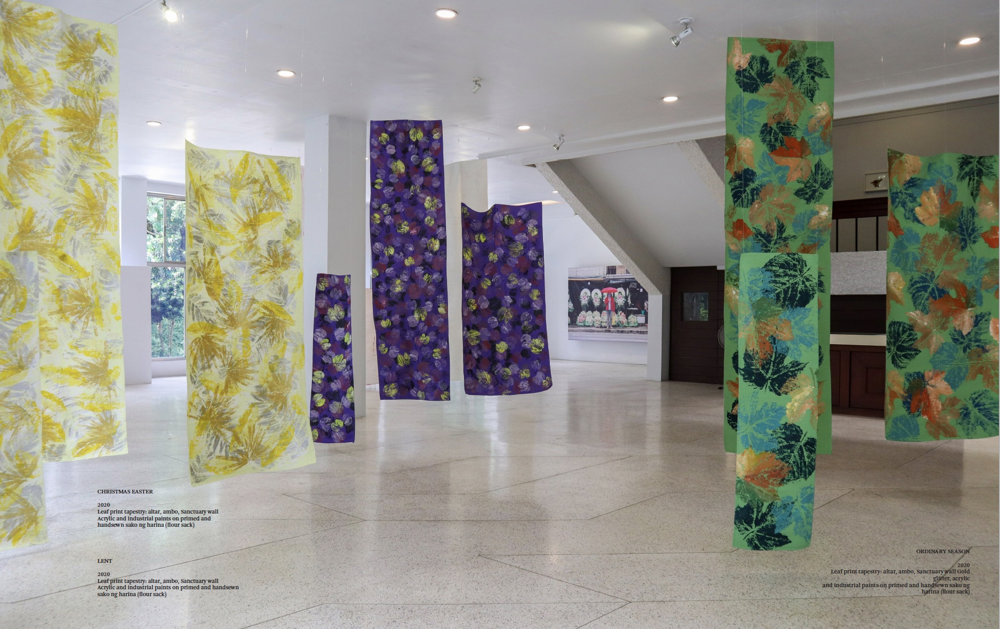
Nature Is Never Spent
The same year, Fr. Jason Dy’s solo exhibition, Nature Is Never Spent, featured tapestries hanging from the lobby’s ceiling. These were vibrant textiles painted in fiery reds and brilliant golds representing the Feast of Martyrs, Good Friday, and Palm Sunday. They illustrated the metaphorical nature of leaves and branches as the spirit of hope during the most trying time, the COVID-19 pandemic.- UP Vargas Museum

#IamTREE
This gesture is a personal attempt to be closer to nature to know how to speak to the trees. This is perhaps a personal atonement or at-one-ment with nature.

Arrange/Enliven
Appropriating the visual languages of Dutch painting, Ikebana, van Gogh, and contemporary artists like Andy Goldsworthy and Anya Gallacio, (Jason Dy SJ) was able to create “three hundred and sixty-one posts of floral arrangements…” Patrick Flores, “Register of Deeds,” in Portable Gray, Vol. 4, No. 2, Fall 2021.
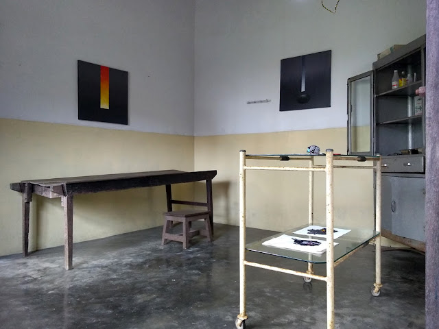
Homage To The Bakers
In the Wagamon Art Workshop, Jason Dy SJ created works from performative floral ritual to paintings as homage to the founders of the place, namely, the Malayalam doctor Elizabeth Jacob-Baker and her British-born architect-husband Laurie Baker.
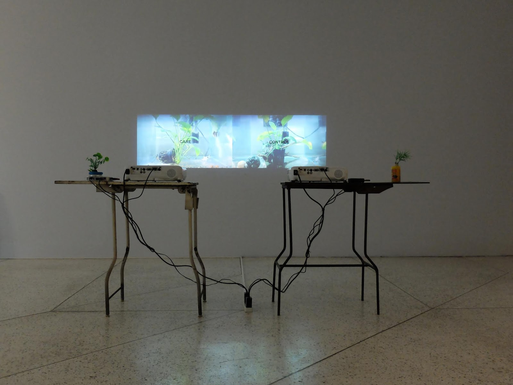
Studio Studies
In the exhibition, the Jesuit priest and contemporary artist examines not just the function of the studio in relation to his situational and participatory art projects since 2009 when he founded the Alternative Contemporary Art Studio (ACAS) in the garage of Sacred Heart Parish administration building, Cebu City.
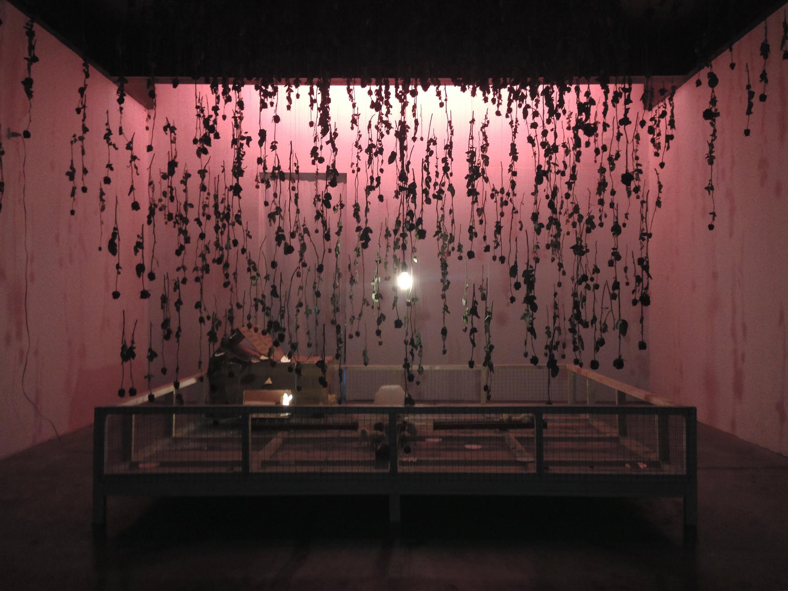
Wala Ni Isa
The eventual drying of the flowers and the maturation of the chicks represent the durational characteristic of ritual and performance, weaving both actions into one. - Con Cabrera
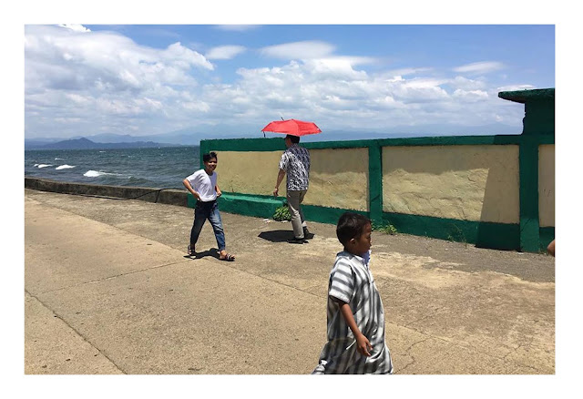
Red Umbrella Project
The Red Umbrella Project was initiated on the 46th anniversary of the declaration of Martial Law, 21 September 2018. It is an ongoing performance of carrying a red umbrella symbolizing a shield from bloodshed due to the violence happening in the Philippines, especially in the war against illegal drugs.
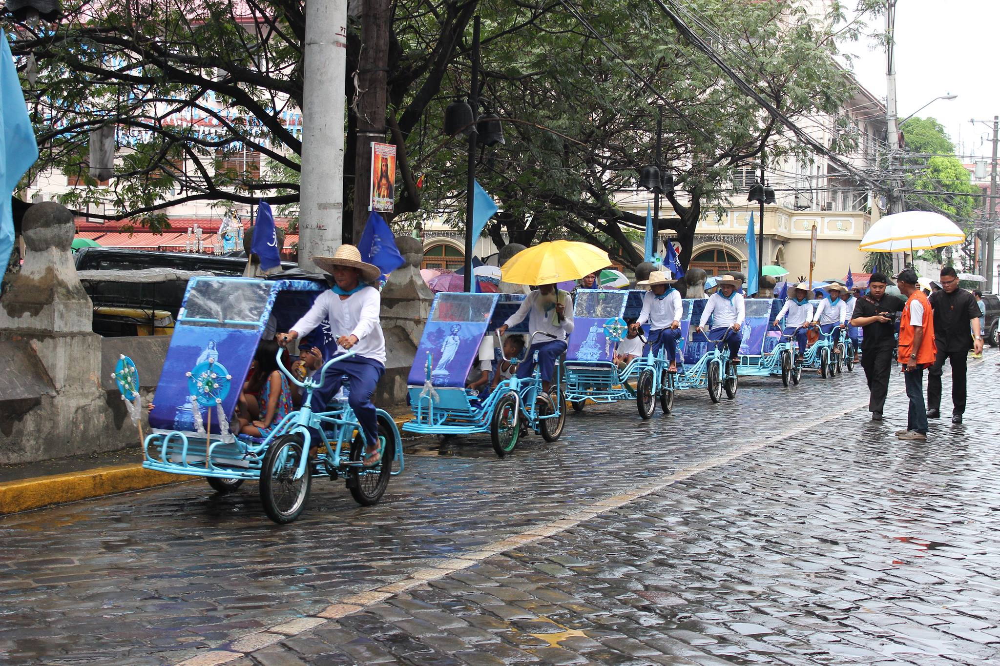
Procesion Los Camareros
Procesión de los Camameros (Procession of the Caretakers) is a site-responsive and participatory art project that responds to 1941's declaration of Intramuros as an open city, the architecture of San Ignacio Church, the annual Marian procession of Intramuros, and the professionalization of the pedicab system by the current Intramuros Administration (IA).
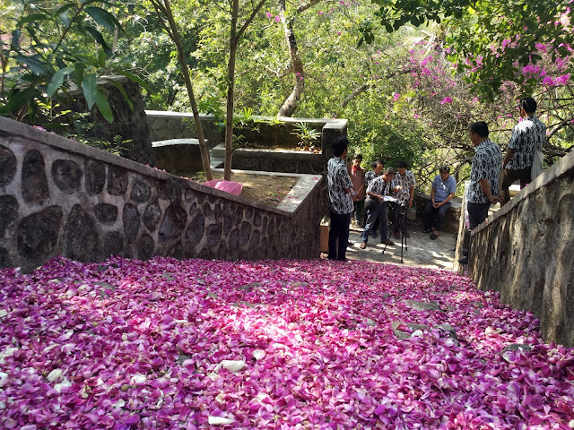
Tak Satupun (Not One Less)
...as the title suggests, this art happening at the Giri Sapto Cemetery is an attempt to consider the fragility of human life as well as our shared responsibility in preserving and protecting it through some creative gestures and communal ritual.
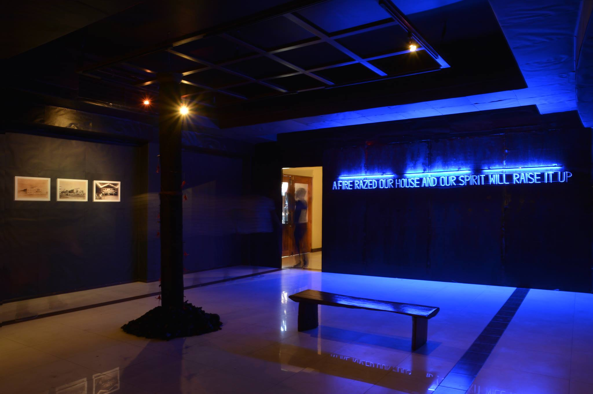
Silent Concert
This art installation presents a stubborn insistence on creating meaning out of the fire rubble that could either be just a cathartic expression of the unfortunate event or an affirmation of the indomitable communal spirit of igniting a passion for rebuilding from the embers and ashes.
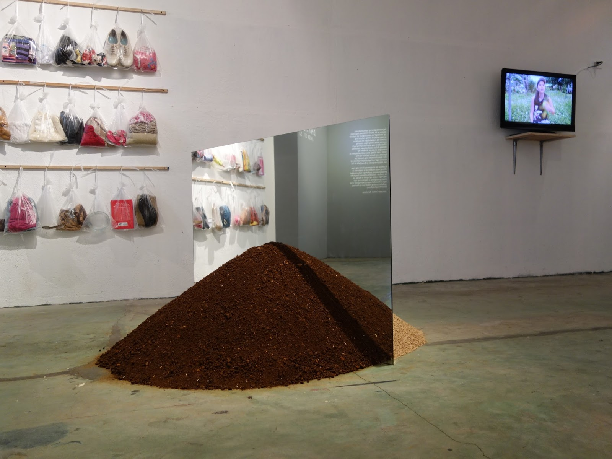
Barter
The exhibition looks into how a community like Lucban will traverse and contend with the repercussions of economic growth, the devices of agricultural life, and the pertinency of cultural celebration of a bountiful harvest and the artist’s attempt at repositioning barter as one of the lenses by which we understand contemporary exchanges in art and society.
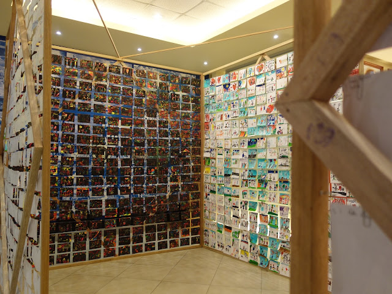
Mercy 101 (Edition 1)
MERCY 101 (Edition 1) envisions this particular project as a beginning of serial collaborative art projects that explore the concept of mercy with various communities. Due to the limited perspective of an individual, the perspectives of others in the community are encouraged to facilitate a growing and in-depth understanding of the word and the concept of mercy.
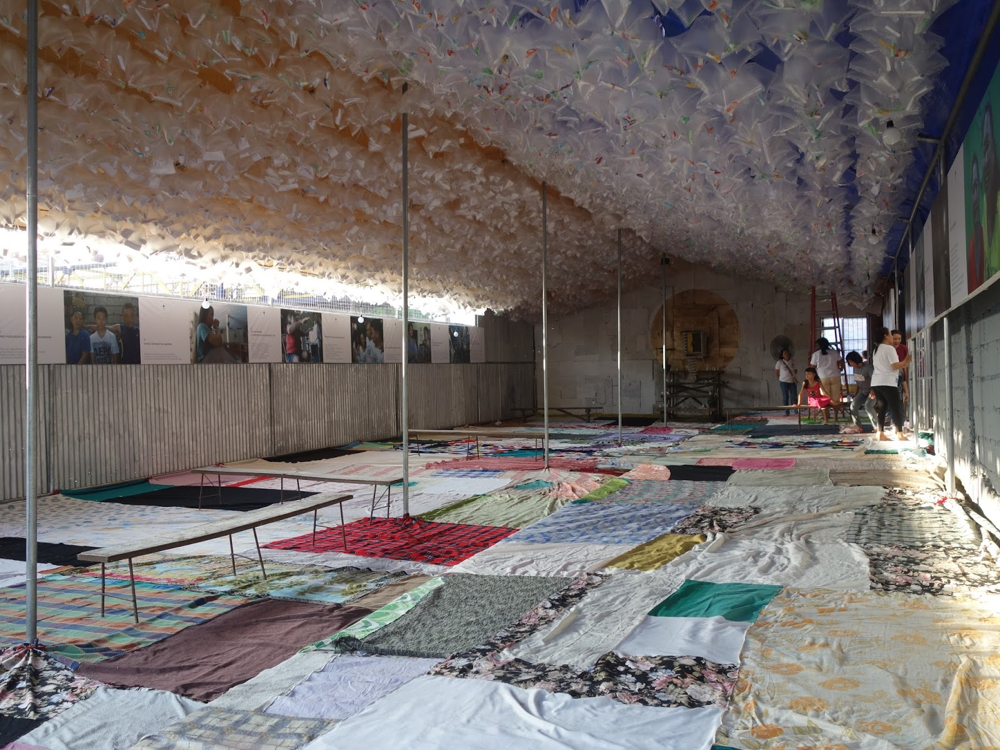
Kanlugan ng Awa
In the year of the Extraordinary Jubilee Year of Mercy, Kristong Hari Parish mounts an unconventional altar of repose entitled Kanlungan Ng Awa (Sanctuary of Mercy). The design and production of this tent-chapel/art installation is a creative interaction, an in-depth collaboration and a cooperative construction between artist-priest Jason Dy, SJ and the congregation/communities of the parish.
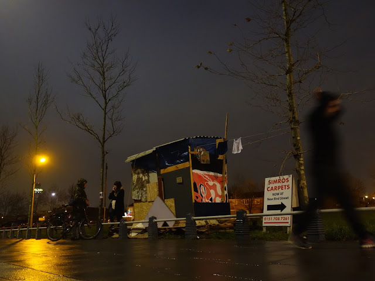
Transitional Shelter (Site of Refuge 2)
In relation to its surroundings, the work’s installation in the street becomes unexpected and interruptive. From the inside, it provides an immersive space where it seems to provide shelter from the heavy rain as well as a meditative sanctum to reflect on the fragility of human existence seeking refuge from the perils of life, such as natural calamities.

Through the Valley of the Shadow of Death
Walking through the Valley of the Shadow of Death is a documented journey that attempts to reconcile the reality and mystery of death and grief in everyday life. Dy’s journey has become an allegory in harnessing the potential experience of art and of death to apprehend the absence of a presence, of the deceased through personal and social rituals of mourning the dead in contemporary times.

Testimony of What Remains
Testimony of What Remains follows Dy's series of projects called In Loving Memory, one that he has most explored, expanding a conversation of various recollected memories of the dearly departed through community interactions centered on bottled memorabilia, envelopes of prayer requests and actual remnants of cemetery markers and statuettes. - Karen Flores
Exhibition History
2024
[Title of Exhibition]
[Venue, City, Country] — Solo exhibition. Brief curatorial note or description.
2023
[Title of Exhibition]
[Venue, City, Country] — Group exhibition. Brief curatorial note or description.
2022
[Title of Exhibition]
[Venue, City, Country] — Solo exhibition. Brief curatorial note or description.
2021
[Title of Exhibition]
[Venue, City, Country] — Group exhibition. Brief curatorial note or description.
2020
[Title of Exhibition]
[Venue, City, Country] — Solo exhibition. Brief curatorial note or description.